7 月 16 日：Contrastive-Augmented Flow Matching for Style-Content 等视觉表征论文归档
本页按日期归档近期论文，保留优先级、主题、来源与方法线索，方便回看同一批工作的研究脉络。
先读 Contrastive-Augmented Flow Matching for Style-Content。把 contrastive regularization 接进 flow matching，在 CLIP/DINO/ALIGN embedding space 做 content-style 表征解耦。 其余论文按 P1/P2 与主题顺序扫读，重点看方法图、消融设置和是否能迁移到通用视觉表征。
论文索引
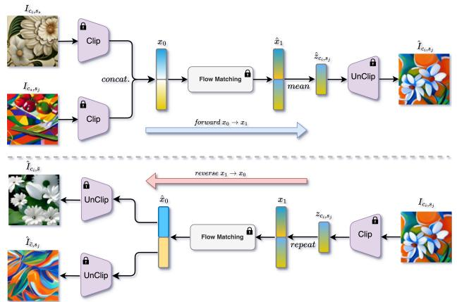
Contrastive-Augmented Flow Matching for Style-Content Disentanglement
高相关；详见方法、贡献和实验边界。
方法：把 contrastive regularization 接进 flow matching，在 CLIP/DINO/ALIGN embedding space 做 content-style 表征解耦
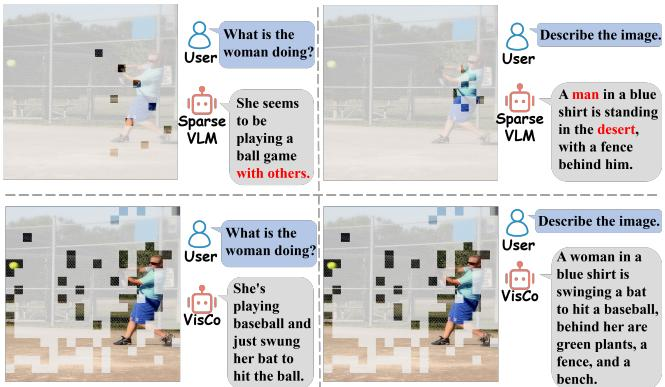
VisCo: Leveraging Large Language Models as Intrinsic Encoders for Visual Token Compression
高相关；详见方法、贡献和实验边界。
方法：复用预训练 VLM 自身作为 intrinsic compressor，用少量 memory tokens 压缩视觉信息，直接影响视觉 token 表征保真
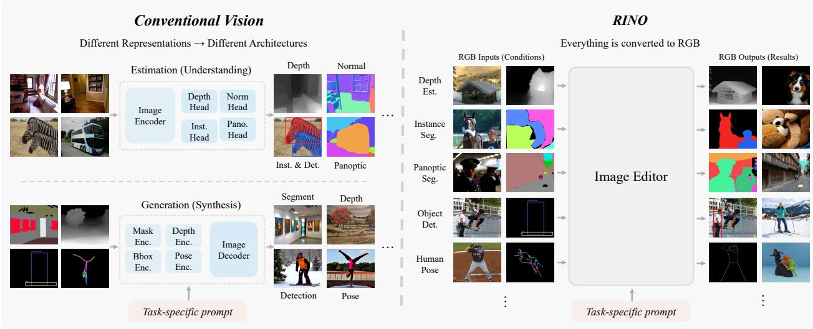
Let RGB Be the Language of Vision
高相关；详见方法、贡献和实验边界。
方法：把 mask、depth 等结构化视觉信号统一成 RGB in/RGB out，有机会成为视觉任务统一接口
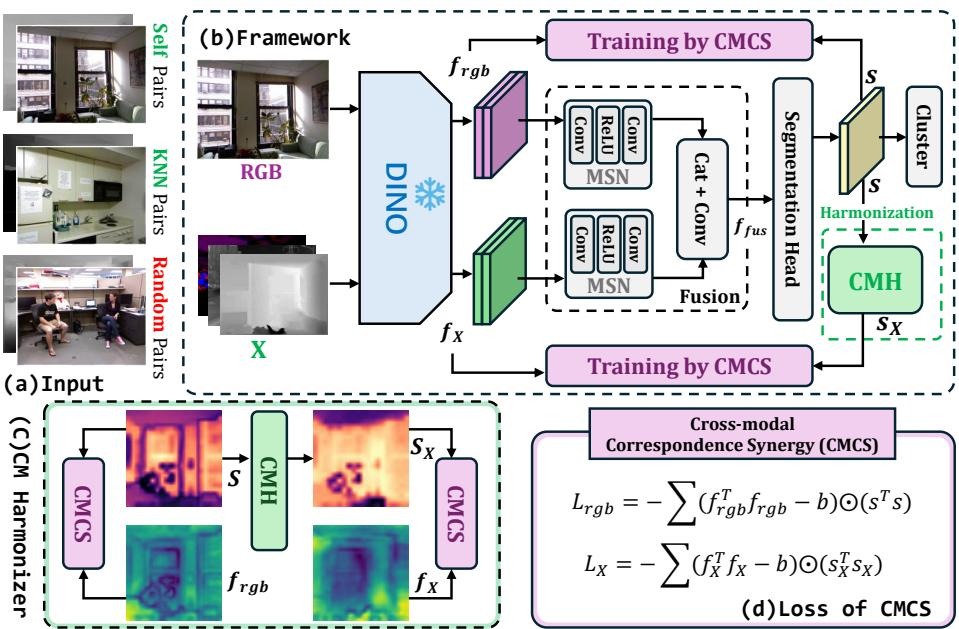
UMSS: Towards Unsupervised Multi-modal Semantic Segmentation
高相关；详见方法、贡献和实验边界。
方法：基于 DINOv3 做 label-free multimodal segmentation，直接检验 VFM 特征能否统一 RGB 与其他传感器结构
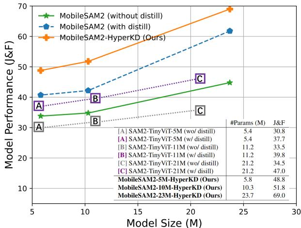
MobileSAM2: Lightweight Segment Anything for Spatial Intelligence
中高相关；详见方法、贡献和实验边界。
方法：把 SAM2 的图像/视频分割知识蒸馏到轻量模型，关注 VFM 知识如何跨时序和粒度迁移
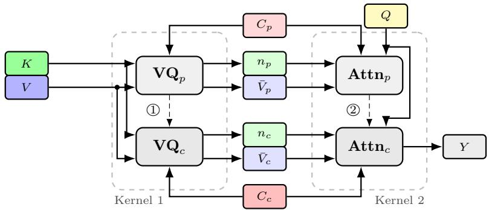
AVQ-Attention: Adaptive Vector-Quantized Attention
中高相关；详见方法、贡献和实验边界。
方法：AVQ-Attention 根据注意力重要性自适应分配 VQ codebook capacity，影响视觉 token 表征效率
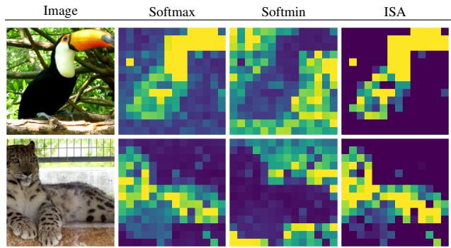
Inhibited Self-Attention: Sharpening Focus in Vision Transformers
中高相关；详见方法、贡献和实验边界。
方法：利用负注意力抑制背景响应，提升 ViT object-centric selectivity 与 OOD robustness
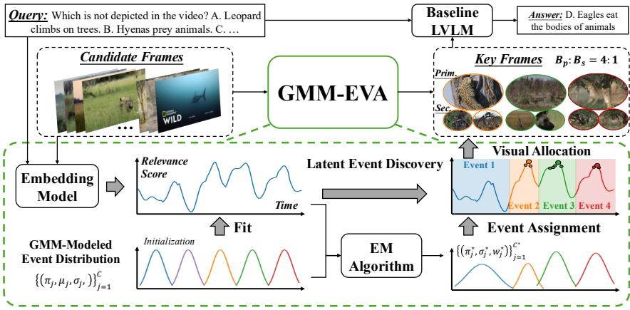
Gaussian Mixture Modeling for Event-Aware Visual Allocation in Long Video Understanding
中高相关；详见方法、贡献和实验边界。
方法：用 event-level structure 分配长视频 visual token budget，和视频 VLM/视频预训练的 token selection 直接相关
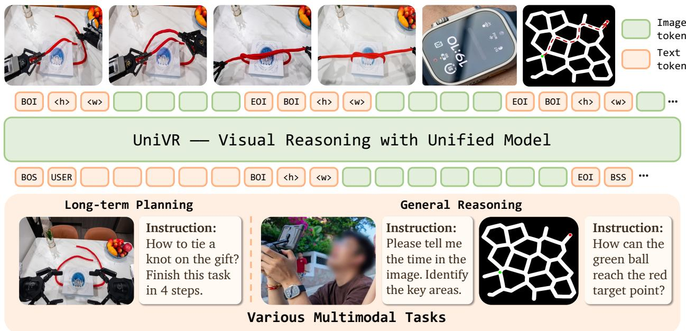
UniVR: Thinking in Visual Space for Unified Visual Reasoning
中高相关；详见方法、贡献和实验边界。
方法：从纯视觉 demonstrations 学复杂推理、物理动态和长期规划，不依赖 image-text pairs
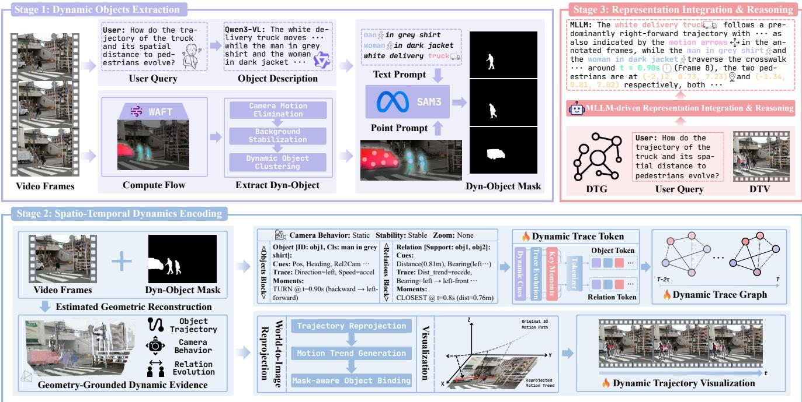
DynTrace: Tracking Dynamic Object Evidence for 4D Spatio-Temporal Reasoning in MLLMs
中高相关；详见方法、贡献和实验边界。
方法：用 trace tokens 和 geometry-informed priors 让 MLLM 连续跟踪动态对象证据，补视频表征的 4D readout
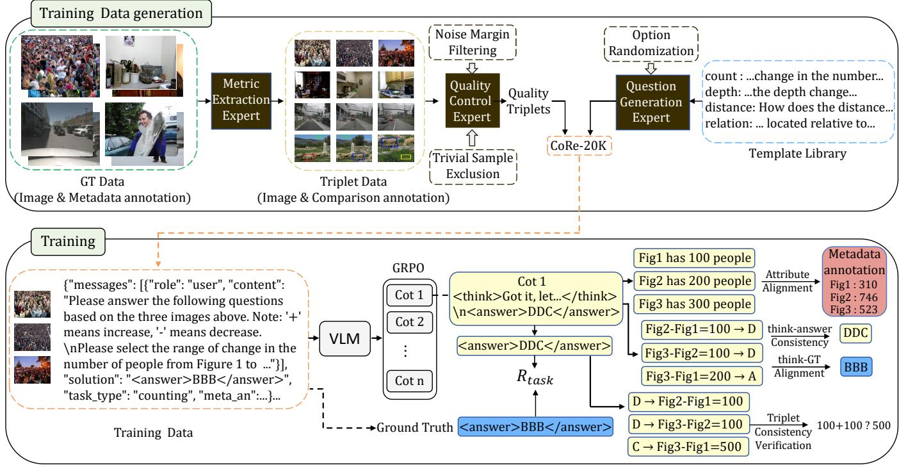
CoRe: A Comprehensive Framework for Cross-Image Comparative Reasoning in Vision-Language Models
中相关；详见方法、贡献和实验边界。
方法：构造 cross-image comparative reasoning 数据和 reward，关注 fine-grained attribute grounding
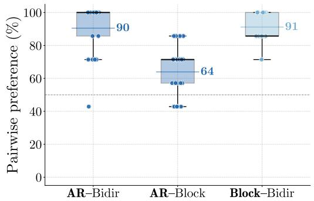
The Seriality Gap in Video Diffusion Models
中相关；详见方法、贡献和实验边界。
方法：分析 video diffusion 在长串因果事件上的 seriality gap，有助判断生成式视频模型能否当通用视觉 learner
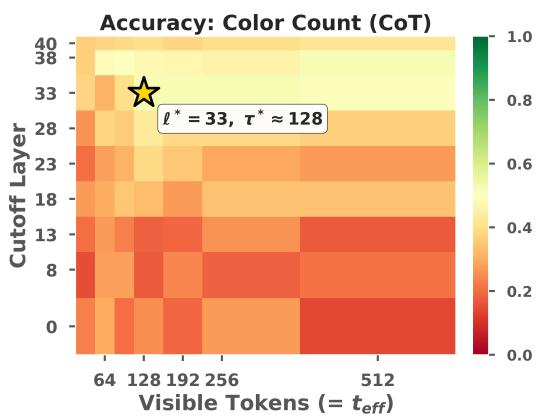
Visual Access Boundaries in Vision-Language Model Reasoning
中相关；详见方法、贡献和实验边界。
方法：用 causal masking 定义 Visual Access Boundary，诊断 CoT 是否真的延长了图像 token 访问